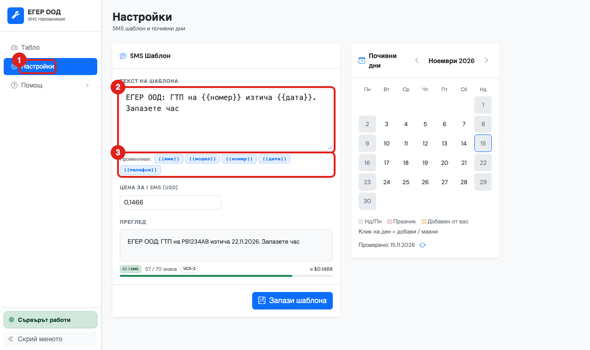
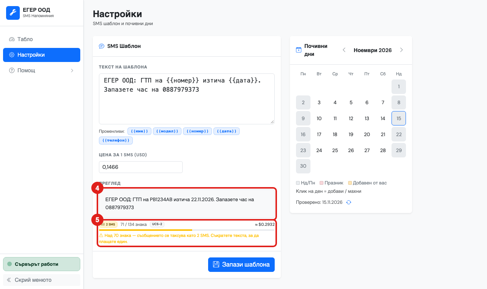
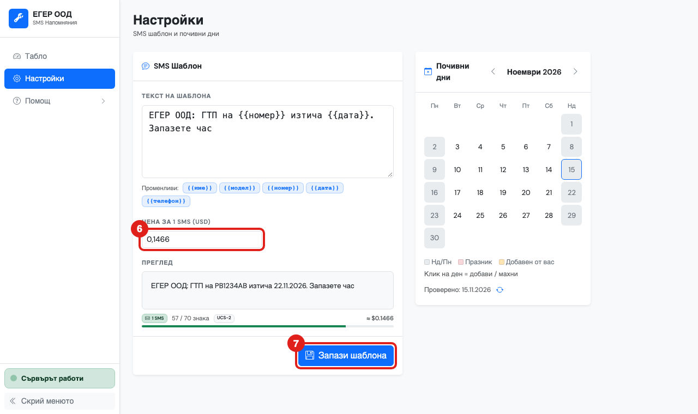

За печат или PDF: натиснете Ctrl + P
SMS шаблон и цена
Шаблонът е текстът на всяко SMS. Програмата слага в него данните на клиента.
На кирилица едно SMS е до 70 знака. По-дълъг текст = 2 SMS и двойна цена.
Променете текста

- В лявото меню щракнете Настройки. 1
- В полето „Текст на шаблона“ променете текста. 2
Не трийте думите в двойни скоби, например
{{дата}}. На тяхно място програмата пише данните на клиента. - Искате данни на клиента в текста? Щракнете в текста, където да са. После щракнете бутон под полето. 3
{{име}}= името на клиента.{{модел}}= моделът на колата.{{номер}}= номерът на колата.{{дата}}= датата, на която изтича прегледът.{{телефон}}= телефонът на клиента.
Проверете дължината

- Погледнете „Преглед“. Така ще изглежда SMS-ът. 4
Прегледът е с примерен клиент, „Иван Петров“. Истинското SMS е с данните на всеки клиент.
- Погледнете брояча под прегледа. 5
Зелено „1 SMS“: добре. Жълто или червено „2 SMS“ и текст „Над 70 знака …“: съкратете текста, докато стане „1 SMS“.Дълго име или модел правят SMS-а по-дълъг. Оставете няколко знака резерв.
Цена и запазване

- Цената на SMS е сменена? Напишете новата цена за 1 SMS в долари в „Цена за 1 SMS (USD)“. 6
Цената не е сменена? Не пипайте полето. Не знаете цената? Обадете се за помощ.
- Щракнете синия бутон Запази шаблона. 7
Бутонът запазва и текста, и цената.
- Долу вдясно излиза зелено съобщение Шаблонът е запазен!
Готово. Какво стана?
- Всяко следващо SMS е с новия текст. Пратените SMS не се променят.
- Цената служи само за сметката „≈ $“ под прегледа и в прозореца „Преглед на SMS“ (тема 1). Тя не променя колко плаща фирмата.
Ако нещо не стане
- Не щракнахте „Запази шаблона“.
- SMS-ът е със стария текст. Презареждане (F5) връща стария текст в полето. Направете стъпки 2–8 пак.
- Излиза жълто съобщение „Непознати променливи: …“.
- Текстът е запазен, но дума в двойни скоби има грешка. Тя ще излезе в SMS-а така, както е написана. Изтрийте я и сложете вярната с бутон под полето (стъпка 3). Щракнете пак „Запази шаблона“.
- Излиза червено съобщение „… Шаблонът е празен.“
- Нищо не е запазено. Напишете текст.
- Излиза червено съобщение „… е отворен в Excel“.
- Нищо не е запазено. Затворете файла „клиенти.xlsx“ в Excel. Щракнете пак „Запази шаблона“.
- Полето за цена е празно или с грешно число.
- Програмата пази старата цена. Напишете число, например
0,15.